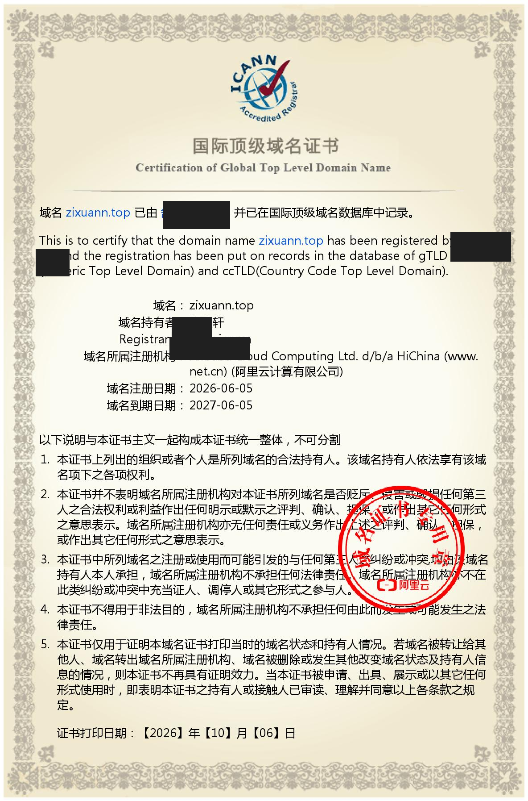

NO. 11.05
NO. 11.05
NO. 11.05
NO. 11.05
JOURNAL
全部归档
日志
02
思考 · 55 分钟
这几天的零碎：改名、头像、运行天数，还有一次 git 事故
不重复以前写过的搭站过程。只记 10 月 12 日之后到今天的新事：站名、头像、简介文案、阅读时长、运行天数实时化，以及一次本地仓库丢失后的覆盖发布。写得很细，当存档用。
#随笔#劳动小结
03
技术 · 12 分钟
把电脑版 Folia 拧到手机上：一天的移植记录
电脑上的 Folia 0.7.18 有队列拼贴，手机上还是旧壳。今天干脆直接拿官方源码重打 Android 包，把独立网易、触控播放条、全屏白条这些都拧了一遍。署名：舸。
#技术#Folia#Android#劳动小结

04
05

06